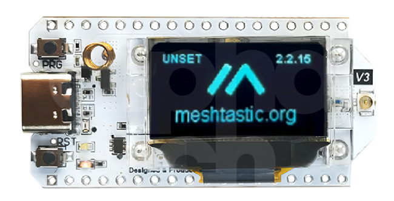
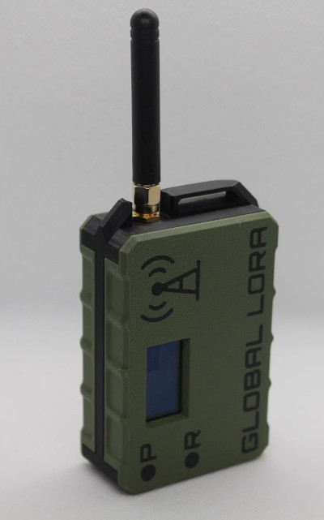
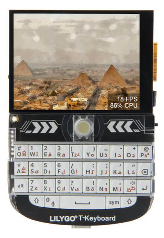

Some thoughts on LoRa-based mesh radio technologies
 I have two
reasons for being interested in off-grid communication. First, I spend a
fair amount of time in areas that our mainstream communications
infrastructure just doesn’t reach. In the UK, you don’t have to be very
far from a population centre, before you find that there’s no mobile
phone signal. That’s the pragmatic reason for my interest.
I have two
reasons for being interested in off-grid communication. First, I spend a
fair amount of time in areas that our mainstream communications
infrastructure just doesn’t reach. In the UK, you don’t have to be very
far from a population centre, before you find that there’s no mobile
phone signal. That’s the pragmatic reason for my interest.
A less pragmatic, more nebulous reason stems from the fact that our communications infrastructure is fragile. I live in a densely-populated urban area, and yet a single flash flood has rendered me effectively off-grid, by cutting off a critical electricity supply. The roll-out of ‘fibre to the premises’ technology has made the situation even worse, because it relies on the integrity of power supplies not just in one location, but in multiple locations. It would be nice if at least essential services could continue to function with a degraded infrastructure. Perhaps we need to develop robust, decentralized, battery-powered communications systems, and that’s what mesh radio claims to offer.
In the UK, there are at present two popular mesh radio technologies: Meshtastic and MeshCore. I’ve tried both of these, and I’ll be describing my experiences. I’ll also be comparing them to widely-used analog radio technologies, like VHF and PMR.
What is this LoRa thing, anyway?
LoRa (“LOng RAnge”) is a digital radio technology, optimized for sending occasional, small‑ish packets of data, using low-power transmitters. In the UK, LoRa devices transmit at less than 500mW in the 868MHz band – this power is referred to as “27 dBm” in LoRa jargon. Despite the low power, LoRa can achieve a range of about a mile in urban areas, and perhaps ten miles outdoors. However, the high‑ish frequencies mean that LoRa’s transmissions are not really subject to reflections, limiting its range to the visible horizon, regardless of power. Unlike short-wave radio, which can bounce its way from one continent to another, LoRa is usually a line-of-sight technology.
To achieve comparatively long distances with low average powers we must accept the inevitable downside of low bandwidth – perhaps as little as a few hundred bits per second. In addition, as any devices may potentially be operating in the same narrow band, contention may limit the bandwidth even further. LoRa is good for wide-area telemetry, like “smart” utility meters: an electricity meter might need to send only a few bytes each day.
For person-to-person communication, however, the low bandwidth means that LoRa is mostly only useful for short text messages, and this kind of messaging is exactly what technologies like Meshtastic and Meshcore focus on.
Both these technologies and others, similar ones work by forming a virtual mesh of radio nodes, within which the nodes relay messages from one to another. The mesh topology makes it possible, in principle, to achieve better than line-of-sight communication, even at low power. All the popular mesh radio technologies allow (in some cases, mandate) messages to be encrypted – an increasingly relevant security measure.
The frequencies used by LoRa in the UK are licence-free. If you have an amateur radio licence you can, in theory, use the LoRa frequencies at higher powers but, in practice, none of the widely-available radio devices can actually transmit at powers that need a licence. Also, as it’s unlawful to encrypt communication when operating under an amateur radio licence, licensed and non-licensed installations don’t play well together, even when using the same core protocols.
What you need to get started in mesh radio
To use Meshtastic, Meshcore, or similar technologies, you’ll need at least one each of the following:
- A microcontroller with built-in LoRa radio, like the Heltec LoRa 32 v3.
- An antenna suitable for the frequency band. It need not be large.
- Something to provide a user interface to the microcontroller, such as a smartphone or computer.
- Software for the microcontroller and the user interface device.
- A battery, if you need free-standing, off-grid operation. A single 18650 is a popular choice here.
The Heltec LoRa device, like most similar parts, is just a tiny PCB:

At the far right of the board, in the photo above, you can see the IPEX antenna connector. IPEX is a tiny coaxial connector that I haven’t seen used outside of LoRa applications. On the right is the USB power and data connector, along with a couple of LEDs and pushbuttons. A small screen can be programmed to provide status information, but this will probably be powered down most of the time, to save energy. The little copper coil next to the USB socket is the Bluetooth antenna.
A common set-up is to build all these components, except the user interface, into a small case. Such cases are inexpensive and widely available, as are plans to make them using a 3D printer. Alternatively, you could buy a ready-made mesh radio like this TerraNode, made by LayerFab in the UK:

Although you’d probably use this device with a smartphone as the user interface, it’s important to understand that the smartphone is only the user interface – mesh radio doesn’t depend on any public infrastructure.
The TerraNode uses a Heltec LoRa radio board, which comes pre-programmed with the Meshtastic firmware. All you need to do to get started is to pair it with a smartphone using Bluetooth. Supplying the unit pre-programmed makes it easier for new users to get started, but the supplied Meshtastic firmware could be a little out-of-date. In that case, you’ll need to install new firmware yourself. You could also just change the firmware for Meshcore or something else. More on the subject of firmware later.
Alternatively, if you don’t want to use a phone at all, even as a user interface, you could use a completely self-contained LoRa device like the T-Deck which has its own keyboard and screen:

The combination of a microcontroller, radio, power supply, and antenna makes a mesh node, of which there are various functional types, that is, different roles they can play in the mesh.
How the mesh works
Although there are now a number of competing mesh radio technologies, they all work in broadly the same way.
The mesh is made of communicating nodes. Some or all of these nodes are relays (or repeaters, or routers – different words for the same thing), which can pass messages from one node to another. Others are non-relay (‘mute’) clients, that can send and receive messages, but do not distribute them.
If a client can’t reach another client directly, it can ask a relay to pass the message along. It’s important to understand that relaying messages around a dynamically-changing network is a Hard Problem, with no optimal solution. It is the different relaying behaviour that largely distinguishes the different mesh radio technologies.
For example, in the Meshtastic system, the standard behaviour of relay nodes is to ‘flood’. That is, when a node receives a packet that is not addressed to itself, it forwards it to every other node it knows about (I’m oversimplifying here – later versions allow for more controlled flooding).
The use of flooding makes the mesh robust, at the expense of potentially high levels of traffic. Without some way to restrict traffic, it will tend to grow exponentially with the number of nodes.
Meshcore supports flooding, but it also allows for nodes to learn specific routes from one node to another. Because nodes tend to be ephemeral, Meshcore has to fall back on flooding from time to time, but the hope is that its more sophisticated routing reduces the amount of traffic in the mesh.
Meshcore also allows the operator to define a manual route from one client to another, which could be useful if the operator knows something about the topology that cannot be discovered automatically.
Mesh radio firmware
So far as I can see, the various mesh radio technologies support broadly the same hardware. So whether you’re using the Meshtastic or Meshcore system, or something else, depends on the firmware you install (‘flash’) on the microcontroller. It’s worth bearing in mind that, at this time, none of these technologies are interoperable – you’re making a one-time decision which network to join when you flash the firmware.
In most (all?) cases, you’ll perform the initial firmware installation using a computer and a USB cable. Both Meshtastic and Meshcore have web-based flashing systems, although both support only Chromium-based web browsers. I could not get Meshtastic’s web flasher to work on my Linux laptop, but Meshtastic also supplies a command-line Python program, which worked fine. This would be my preferred way to work, anyway; but I’m funny like that. Meshcore’s web-based flasher worked fine for me, which is good because, as far as I know, Meshcore documents no other way of installing firmware.
Both Meshcore and Meshtastic provide different kinds of firmware for each supported LoRa device. Some firmwares have Bluetooth support, for example, which is useful if you’re using a smartphone as the user interface. Meshcore describes this kind of firmware as “companion” firmware, which seems to me a rather odd term. Meshcore also requires the user to select a specific firmware for a particular mode of operation – we have to select between a relay (repeater, in Meshcore terminology) or mute client at installation time, for example. Meshtastic allows the user to set these roles at runtime.
Whatever firmware you use, you’ll need to set the operating frequency directly after flashing – until you do this, you could be operating unlawfully, and you won’t see any other nodes. Once paired, you can use the smartphone app to perform this configuration, and change many other settings. Alternatively, there are command-line clients for nerds like me, which can work over a USB connection if you don’t want to use Bluetooth.
Installing a user-interface app on a smartphone
Both Meshcore and Meshtastic support Bluetooth communication to a smartphone, which is likely to be more convenient than a serial connection for a portable node. Both also support USB communication, though, which might be better for a permanently-installed relay node.
I was pleased to find that both Meshcore and Meshtastic provide Android APK files for their smartphone software, rather than forcing users to go to an app store. That’s a big deal for me, as my Android phones are completely de-Googled, and I can’t use the Google Play Store. Meshtastic is on the Play Store, but it’s also on F-Droid, which is a non-Google app store for open-source software.
It’s worth bearing in mind that the Meshtastic phone app is open-source, which is why it’s available on F-Droid. The Meshcore app is free, but it’s not open-source. In addition, some features can only be enabled by payment. I do not know if these features would work on a de-Googled phone although, of course, this won’t be an issue for most users.
At the time of writing, I found Meshtastic’s Android app to be both more useable and more stable than Meshcore’s. However, both are undergoing rapid development. There are apps for Apple phones, but I don’t know anything about them.
Antenna issues
The maxim “height is might” is truer for LoRa than for many other radio technologies, because it tries to achieve long range with comparatively high frequencies, which resist reflection. We don’t usually care how high we mount our WiFi antennas, because we don’t expect them to cover more than a single building.
LoRa antennas may be omnidirectional or unidirectional. A unidirectional antenna will focus the transmitted power in a specific geographical direction, which is a useful characteristic if you’re trying to create a fixed route between two locations. For portable use, omnidirectional is almost always going to be more useful.
LoRa also requires more attention to antenna gain than other radio technologies. Broadly, a high-gain antenna will tend to concentrate the transmitted power into a narrow vertical disk, whether it’s omnidirectional or unidirectional. Such an antenna will create a stronger signal at the receiver, so long as it hits the receiver at all. A low-gain omnidirectional antenna will distribute power in what is essentially a sphere. The transmitter can’t miss the receiver entirely, but the received signal might be too weak to decode. In practice, though, portable operation more-or-less requires low-gain, omnidirectional antennas, because nodes will move around with their users. LoRa devices are often supplied with an antenna suitable for portable use – it will be a stub about two inches long.
As with other radio applications, it’s perfectly possible for a LoRa node to see other nodes, but not be able to transmit to them. Since all nodes are notionally transmitting at the same power, this discrepancy can only be the result of antenna style and placement.
Real enthusiasts make their own antennas, which is relatively easy with the high frequencies of LoRa. It’s certainly a whole lot easier than making an antenna for the 3.5MHz short-wave band, which could fill a field.
Mesh radios for outdoor activities
Broadly, they work fine. If you’re using a smartphone as the user interface, you just leave the mesh node powered on, in your pocket or backpack; Bluetooth provides communication between the radio and the smartphone. There’s little need to refer to the tiny screen on the LoRa device itself, if it even has one, because the smartphone app provides the entire user interface. An 18650 battery will give the node about the same battery life as a typical cellphone – one to two days with light use.
For outdoor activities that have a permanent base camp, it’s typical to dedicate a mesh node as a relay, and provide it with an antenna on a pole (or up a tree). The relay behaviour of mesh radio means that two users can communicate if they can both reach the base node, even if they can’t reach one another directly.
How does LoRa compare with other, well-established technologies in this area? I’ve used both VHF radios (operating at about 140MHz) and PMR radios (466MHz) for outdoor activities. For VHF, we have the notorious Baofeng UV-5R, which costs about £25. PMR radios can be had for half this price – less, if you buy them in bulk. VHF radios typically require a licence of some kind – either amateur or commercial; The PMR radio band is licence-free.
VHF and PMR radios operate at much higher powers than LoRa, and don’t really achieve better range. But – and this fact shouldn’t be underestimated – these technologies support speech; LoRa will only carry short text messages.
Like LoRa, VHF and PMR are line-of-sight radio technologies, but they don’t have the relay features of mesh radio. Well – they kind of do: it’s just that the relaying is manual. If Alice can reach Bob but not Charles, she can ask Bob to pass the message to Charles. To be fair, this kind of manual relay works best when there is a dedicated base station that acts as a control point; it’s hit-and-miss otherwise.
I suspect, though, that the terrain features that interfere with VHF and PMR will also interfere with LoRa in practice if not in principle. LoRa nodes might coincidentally be placed to route around an inconvenient mountain but, if they’re just in hikers’ pockets, they might not be. I’m not sure I’d want to rely on mesh radio in difficult terrain, unless there were a huge number of nodes, all evenly distributed. Similarly, in the woods I might get only a (direct) range of half a mile with PMR (less if it’s wet). But LoRa won’t do better unless there’s a node every half mile or better.
It’s not even as if LoRa technology is cheaper than the traditional alternatives, and it’s certainly no more convenient. In fact, being limited to text messaging is a lot less convenient.
However, some outdoor events have an extended set-up period, and it wouldn’t add significantly to this time, to deploy LoRa relay nodes at strategic points around the area. It’s relatively easy to make LoRa nodes solar-powered, so you wouldn’t necessarily have to recharge/replace their batteries every day. I’ve also heard of people attaching LoRa relay nodes to balloons, and floating them hundreds of feet above the ground; this isn’t something that can usefully be done with analog radio. If the relay nodes have store-and-forward capabilities then, in principle, messages could be stored for client nodes that are temporarily out of range. Again, analog radio can’t do this.
In short, while I can see certain applications for mesh radio in outdoor activities, it does not seem to offer an overwhelming advantage over existing technologies, other than in a limited number of scenarios that capitalize on mesh radio’s unique strengths.
Mesh radio for civil contingencies
We take it for granted that we can send a message to anybody, more-or-less anywhere on Earth, in a fraction of a second; but a vast assemblage of inter-dependent infrastructure makes this possible. A natural disaster, even a localized one, can bring this this entire system down, over a large area.
It’s not uncommon for the civil authorities to turn to amateur radio operators to provide communications back-up in times like this. Unfortunately, the number of traditional amateurs is decreasing, and most likely will continue to decrease. By ‘traditional’ I mean transmitting voice at tens of watts through vast antennas. But LoRa-based hobbyist radio is growing in popularity, at least in some parts of the world. So it’s reasonable to ask whether a hobbyist radio mesh, or even a governmental one, could step up when the infrastructure has fallen down.
On the face of it, it seems eminently possible. LoRa nodes are inexpensive, and can be powered from, say, a USB power bank for many days. They can even be solar-powered. Mesh radio is tolerant of node outages, and adapts well to changes in topology. Its low bandwidth isn’t a problem if all you need to communicate are the locations of evacuation points or where to get emergency food supplies.
The problem lies in achieving the necessary critical mass of nodes. Short-wave amateur radio has its problems, but it can cover reasonable distances with no intermediate stations. Mesh radio, by its very nature, needs a mesh to be effective. But how dense must the coverage be?
In urban areas, I think you’d need a relay node every half a mile or so, as a minimum, for reliable coverage. I live in a densely-populated area near to London; there are, at the time of writing, two Meshcore relays I can reach at least sometimes, and no Meshtastic relays. I know there are Meshtastic operators only a few miles from me, because I’ve communicated with them in other ways; I guess the built-up nature of the environment makes their relays inaccessible to me, even though I’m using a high-gain antenna on a 30-foot mast. In the urban environment in which I live, a mile seems to be about the absolute maximum range that LoRa can reach, and even that won’t be entirely reliable.
LoRa itself isn’t really designed for general-purpose communication: it’s designed for telemetry. The only reason for the number of mesh radio nodes to grow is if more people are using them. And if more people are using them, there will most likely be more traffic on the mesh. Existing mesh radio protocols do not scale well to high traffic volumes so, presumably, there’s a optimal node density that will give reasonable coverage with manageable traffic – but we don’t know what that density is yet. I’m fairly sure that, in the UK at least, we’re a long way from reaching it.
This situation isn’t helped by the fact that there are multiple, incompatible protocols. Each has its own user base, and the developers do not seem particularly willing to collaborate. Meshtastic and Meshcore are so similar that I can’t help wondering why they exist as separate entities at all. And yet, after a lifetime of working with Linux, I’ve become used to situations in which people who ought to be working together are actually in competition.
In short, while LoRa mesh radio offers an unprecedented opportunity to create a community-driven, robust emergency communications network, I see little evidence so far of progress in that direction.
The bottom line
LoRa-based mesh radio is an interesting, inexpensive technology that provides text messaging without any additional infrastructure. The nodes are light in weight, and can be powered by batteries or solar panels. While its supporters promote it for outdoor activities like hiking and hunting, I can think of few instances were it offers a truly compelling advantage over, for example, PMR radio. That’s not to say there are no applications, but I think they are likely to be comparatively exotic.
Nevertheless, as a radio enthusiast, I imagine I will continue to experiment with it.